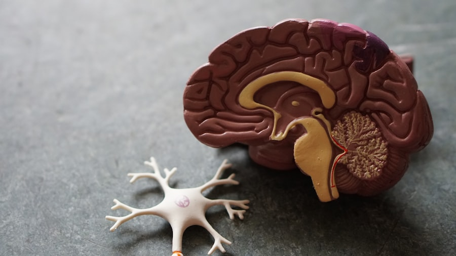

El dolor de cabeza, también denominado cefalea, es uno de los síntomas más frecuentes en la consulta médica y afecta a personas de todas las edades. Se manifiesta como una sensación de dolor, presión o malestar localizado en la cabeza, el cuero cabelludo o la parte superior del cuello. Aunque en la mayoría de los casos es de carácter benigno, su impacto en la calidad de vida puede ser considerable, especialmente cuando se presenta de forma recurrente o intensa.
Comprender su origen, sus distintas formas de presentación y las opciones de tratamiento disponibles es fundamental para abordarlo de manera eficaz y mejorar el bienestar del paciente.
El dolor de cabeza puede estar originado por múltiples factores, tanto físicos como emocionales o ambientales. Entre los desencadenantes más habituales destacan:
En algunos casos, el dolor de cabeza puede ser secundario a otras condiciones médicas como sinusitis, hipertensión arterial o infecciones, por lo que es importante no ignorar episodios frecuentes o inusuales.
La Sociedad Internacional de Cefaleas clasifica más de 150 tipos distintos. A continuación se describen los más prevalentes en la población general:

Es el tipo más común, representando aproximadamente el 70% de todos los casos. Produce una sensación de presión constante, similar a llevar una banda apretada alrededor de la cabeza. Generalmente es bilateral, de intensidad leve a moderada y no empeora con la actividad física. Está estrechamente relacionada con el estrés, la fatiga y la tensión muscular.
La migraña es un trastorno neurológico que cursa con episodios de dolor intenso y pulsátil, habitualmente unilateral. Puede ir acompañada de náuseas, vómitos, fotofobia y fonofobia, y en algunos casos se presenta con aura (alteraciones visuales, sensitivas o del lenguaje previas al dolor). Los episodios pueden durar entre 4 y 72 horas y tienen un impacto significativo en la vida diaria.
Menos frecuente pero extremadamente intensa. El dolor se concentra alrededor de un ojo y puede ir acompañado de lagrimeo, congestión nasal o enrojecimiento ocular en el mismo lado. Aparece en períodos o "racimos" de semanas, seguidos de remisiones de meses o incluso años. Requiere atención médica especializada.
Paradójicamente, el consumo excesivo de analgésicos —más de 10 a 15 días al mes— puede perpetuar e intensificar el dolor de cabeza. Es fundamental seguir siempre las indicaciones médicas y no automedicarse de forma crónica.
Los síntomas varían en función del tipo de cefalea, pero los más frecuentes son:
El tratamiento debe adaptarse siempre al tipo, la frecuencia y la intensidad de la cefalea. En episodios leves o moderados, las siguientes medidas suelen resultar eficaces:
En cefaleas crónicas, migrañas recurrentes o cefaleas en racimos, el médico puede prescribir tratamientos preventivos o específicos. No se recomienda automedicarse de forma prolongada.
Adoptar hábitos de vida saludables es la mejor estrategia preventiva:
Aunque la mayoría de los dolores de cabeza son benignos y autolimitados, existen señales de alerta que requieren atención médica urgente:
Ante cualquiera de estos síntomas, es fundamental consultar con un profesional sanitario sin demora. Más información sobre las migrañas →